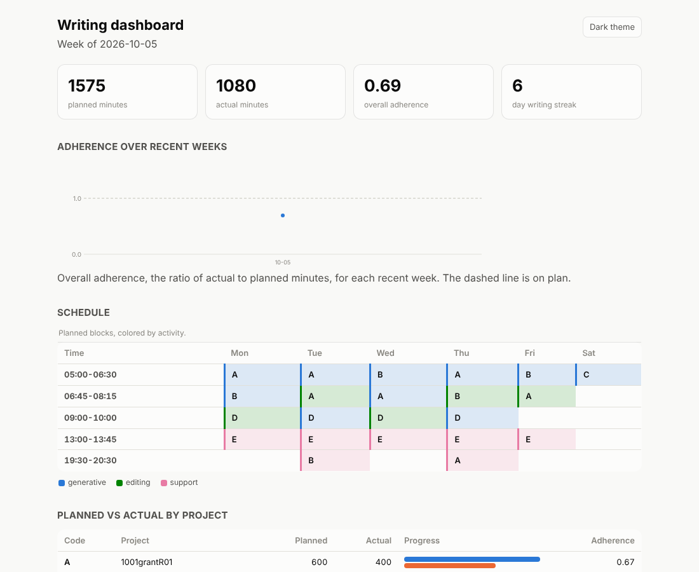

The dashboard is a single HTML page for one week. It holds the same numbers as the compare report, drawn as charts, and it needs no server or network to open.

The dashboard of the practice week, light theme.
~/org/dashboards/2026-10-05.html.The Preview pane draws the page roughly unless the optional web engine is installed. Install it with pip install "writing-habit[preview]", or open the page in your browser.
writing-habit dashboard --week 2026-10-05 \
--out ~/org/dashboards/2026-10-05.html --db ~/org/writing-habit.db
open ~/org/dashboards/2026-10-05.html
The whole end-of-week routine is three commands.
whsync
writing-habit compare --week 2026-10-05 --db ~/org/writing-habit.db
writing-habit dashboard --week 2026-10-05 --out ~/org/dashboards/2026-10-05.html \
--db ~/org/writing-habit.db
A button in the corner switches between the light and the dark theme. The dashboard and the text report round percentages differently, so a share may differ by one point between them.
Next, look across weeks.